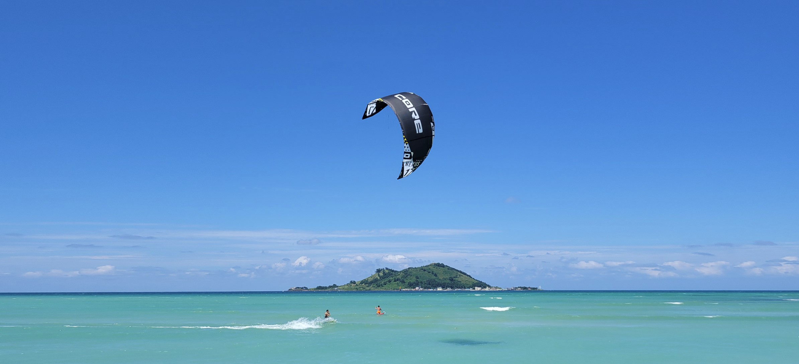
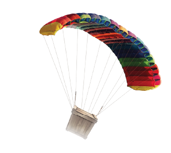
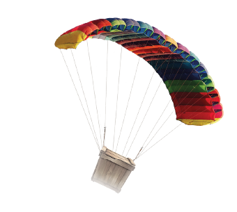

제주도의 중심 한라산과 비양도를 품은 푸른 바다를 마주하는 실외 공간과
‘iF 디자인 어워드’를 수상한 감각적인 실내 공간을 모두 경험할 수 있는 테마파크,
제주의 자연과 어우러져 새로운 형태의 스마트하고 다채로운 어트랙션과 트렌디한 부대시설을 즐길 수 있다.
무동력카트에 ICT기술을 더한 '그래비티 레이싱'을 비롯,
실내 스포츠 게임과 VR 레이싱을 경험할 수 있는 체험형 게임존 ‘LAB 981’,
다양한 브랜드 상품을 판매하는 브랜드 스토어 ‘GARAGE 981’ 등이 마련되어 있다.
DETAILS
9.81파크
제주 제주시 애월읍 천덕로 880-24
휴무일 : 없음
이용시간 : 09:00~18:30


이곳은 넓은 초원으로 한가롭게 노니는 조랑말의 풍경을 감상할 수 있는 목장입니다.
이곳 내에는 산책로가 깔끔하게 조성되어 있어 천천히 걸으며 휴식할 수 있으며,
울타리 주변으로 형형색색의 꽃을 피어나 더욱 아름다운 분위기를 자아냅니다.
특히, 여름에는 해바라기와 양귀비가 가득 피어난 공터가 있어 화려한 포토존을 만들어냅니다.
이외에도 조랑말에게 직접 먹이를 주고, 귀여운 트랙터 모습을 한 마차가 운영되어
특히 아이들과 가족 나들이 장소로 안성맞춤입니다.
DETAILS
렛츠런팜
제주 제주시 조천읍 남조로 1660
월요일, 화요일 및 임시 지정 휴무일
이용시간 : 09:00~18:30
“미끄러지듯 물 위를 달리고, 바람을 타고 날아오르는 짜릿한 기분!”

 


카이트서핑은 패러글라이딩과 웨이크보드를 결합한 스포츠로 카이트(연)를 하늘로 띄우고 이를 조종해
바다를 가로질러 달리고, 점프하여 하늘을 나는 짜릿한 기분까지 느낄 수 있는 최고의 익스트림 스포츠입니다.
카이트의 바람 조종 기술과 서핑을 동시에 할 줄 알아야 하는 고난이도 기술로 사전 교육은 필수이며,
초보자는 익히는데 시간이 조금 필요하지만 한번 익히고 나면 평생을 즐길 수 있는 당신의 인생스포츠가 되어 줄 것입니다.
DETAILS
제주 카이트 서핑
제주 제주시 매촌4길 3
휴무일 : 없음
이용시간 : 11:00~18:00
Dodoo Marina
Blueone Yacht Club.
“천혜의 제주바다에서 즐기는 럭셔리 해양레저의 한상적인 조합”
DETAILS
블루원 요트투어
제주 제주시 도두항서길 41
휴무일 : 없음
이용시간 : 09:00~18:00